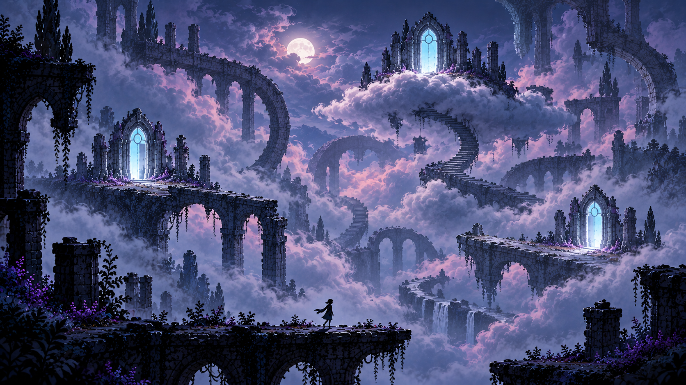

01 · First glimpse
The player enters a quiet ruin. Fog hides the route, but a luminous door supplies direction.
Interaction arc
The journey is a controlled escalation: establish normal play, insert doubt, make doubt actionable, then let impossible space become the new reliable system.

Flowchart
Six-frame storyboard
The player enters a quiet ruin. Fog hides the route, but a luminous door supplies direction.
A person-shaped form appears deep in the scene. Looking again makes it ordinary.
The player reaches the misplaced door. It opens into the same place arranged incorrectly.
A convincing platform begins to dissolve only after the player commits to the jump.
The expected recovery never arrives. The fall lengthens and becomes a transition.
Solid clouds, looping architecture, and several doors replace the assumption of one stable world.
Beat map
The door answers immediately. Curiosity is stronger than fear.
Small anomalies make observation valuable while the route stays readable.
Visual evidence becomes testable and occasionally false.
The player accepts impossibility and searches for internal consistency.
Ambiguous ending
The player enters the final door. The viewpoint remains behind. Fog fills the doorway, briefly forming the same distant figure. The door closes. No scene confirms which world was real—or whether “real” was ever the useful question.